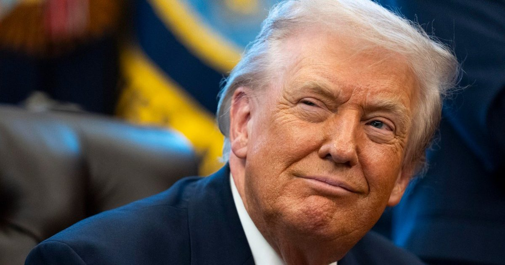

Трамп приказал правительству США называть ИИ «суперразведкой»
Исполнительная власть США больше не признает существование «искусственного интеллекта».
«В будущем официальные веб-сайты по вопросам политики, политические документы и пресс-релизы будут ссылаться только на« Super Intelligence »благодаря новому исполнительному указу, подписанному президентом Дональдом Трампом.« Слово «супер» - лучшее из всех, и самое простое », - сказал Трамп ...